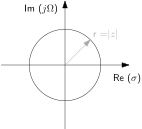

A range of histological features in 1 mm3 of human brain were rendered, including neuropil (A) and its segmentation (B) at nanometer resolution, annotated synapses (C), excitatory neurons (D), inhibitory neurons (E), astrocytes (F), oligodendrocytes (G), myelin (H), and blood vessels (I). A previously unrecognized neuronal class (J) and multisynaptic connections (K) were also identified.
22051
Signals and Systems in Discrete Time
Lecture 6
Reframing: Circling into filter design
Bastian Epp
What happened last week
- From frequency to z
Let’s do the math: From frequency to z-space
Generalization of the Fourier space
Introduce a new variable $z \in \mathbb{C}$
\[ z = e^{\sigma + j \Omega} \quad \ln(z) = \sigma + j \Omega \quad \frac{1}{z} dz = j d\Omega \]
Let’s do the math: From frequency to z-space
Generalization of the Fourier space
Bilateral z-transform pair \[ X(z) = \sum_{n=-\infty}^{\infty} x(n) z^{-n} \qquad x(n) = \frac{1}{2\pi j} \oint X(z) z^{n-1} dz \]
- Components are now exponentially growing/decaying harmonic functions
- With the special case being \[z = e^{\sigma + j \Omega} \qquad \sigma=0 \Rightarrow z|_{\sigma =0} = e^{j\Omega} \]
- The frequency space lives on the unit circle in the z-plane!
- Linear transform (as Discrete Fourier Transform - DFT)
System equations describe systems
The running sum as a system
- General description (for $N$ feed-forward and $M$ feedback elements) \[\frac{Y(z)}{X(z)} = H(z) = \frac{b_0 z^0 + b_1 z^{-1} + \dots + b_N z^{-N}}{a_0 z^0 + a_1 z^{-1} + \dots + a_M z^{-M} } \]
- Transfer function of the running sum filter \[ H(z) = z^0 + z^{-1} + z^{-2} = \frac{z^2 + z + 1}{z^2} \]
- Special case of difference equation with coefficients {$b_0, b_1, b_2, a_0$} = 1 and {$a_1, a_2$} = 0
We can directly link coefficients to filter structure!
From z-space to frequency
“Estimating” the frequency response from the z-transform: Relevant for filter design
Round and round on the unit circle...
a visual approach
What if the z-plane was a rubber membrane...
Poles amplify, zeros attenaute...
What happens in session 6?
...let's dig deeper...
What is going to happen today
- Filter design
- Classes of filters
- Impulse invariance method
- Frequency domain equivalence method
- Frequency warping and how to compensate for it
Small-group discussions!
Filters - the basics

The classics
| Low pass (LP) | Band pass (BP) | High-pass (HP) | |
| White noise |
|
|
|
| Chirp |
The weirdo - all-pass filter
| Input | Output | |
| White noise | ||
| Click train |
Let's do the math: How do we define a filter?
Time domain equivalence ("Impulse invariance method")
"The impulse response of the digital filter is a sampled version of the impulse response of the filter in continuous time"
\[ h(n) = \lim_{T \rightarrow 0} T h_a(nT) \]
Cooking receipe
- “Ignore“ the limit $T \rightarrow 0$ (keep it in mind though)
- Consider the desired transfer function in the s (Laplace) domain
- ”Sample“ the corresponding impulse response (continuous time)
- Transfer the sampled impulse response into the z-domain
- Chose your sampling interval to match the desired frequency range
- Done!
Let's do the math: How do we define a filter?
Frequency domain equivalence ("Transfer function equivalence")
“The transfer function of the digital filter is a sampled version of the transfer function of the filter in continuous time”
\[ h(n) = \lim_{T \rightarrow 0} H(e^{sT}) = H_a(s) \]
Cooking receipe
- Design your filter in the s-domain
- Map your s-plane into something than can be handled better: $\infty$ is a problem (using the bilinear transform) \[ H(z) = H(s) |_{\frac{2}{T}\frac{z-1}{z+1} } \]
- Chose the suitable sampling period $T$
- Done!
A practiacl example
Impulse invariance vs. bilinear transformation
"Sample, z-transform, walk the unit circle" vs. "Bilinear transform from Laplace, walk the unit circle"
Quickie Nr 5
Take a few minutes to answer the following questions:
- What is the relation between the distance of a point on the unit circle in the z domain and the gain in the corresponding transfer function?
- What can an all-pass filter be used for?
- What is the underlying assumption of the time domain equivalence method of filter design?
- What is the underlying assumption of the frequency domain equivalence method of filter design?
The closer a pole/zero to that point, the higher the amplification/attenuation of that frequency.
An all-pass filter has a constant gain for all frequencies, but can be used to manipulate the phase of the signal components.
If the impulse response of a digital filter is matched to the impulse response of the corresponding analogue filter, the systems behave identically.
If the frequency response of a digital filter is matched to the frequency response of the corresponding analogue filter, the systems behave identically.
White lines indicate layer boundaries based on cell clustering. (A) All 49,080 cell bodies of neurons and glia in the sample colored by soma volume. (B) Blood vessels and the nuclei of the 8136 associated cells; 3D renderings of all blood vessels can be viewed in Neuroglancer (https://h01-dot-neuroglancer-demo.appspot.com/#!gs://h01-release/assets/neuroglancer_states/20240424/fig4b.json). Inset shows a magnified view of the location of the individual cell types. (C) Spiny neurons (n = 10531; putatively excitatory) colored by soma volume. (D) Interneurons (n = 4688; few spines, putatively inhibitory) colored by soma volume. (E) Astrocytes (n = 5474). (F) Most of the oligodendrocytes (n = 20,139) in the volume. (G) Cell bodies (n = 6702) of microglia and OPCs. (H) Myelinated axons in the volume color coded by topological orientation. Most axons in white matter run in the perpendicular direction. Images and scale bar are without correction for ultrathin sectioning compression.